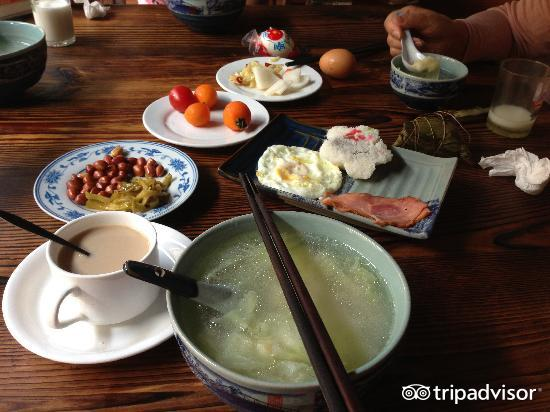

|
||||||||
|
乌镇美食 |
手工酱，中国是酱油生产起源最早的国家，距今已经有二千多年历史，均以天然发酵、酿制。清咸丰九年（1859年），镇人陶叙昌创立了以自己名字为号的叙昌酱园，此为乌镇有历史记载以来的最早的酱园。
三白酒，三白酒是乌镇人的美酒，天然原料纯手工酿成。何谓三白酒？《乌青镇志》上说：“以白米、白面、白水成之，故有是名”。三白酒除了55℃的三白酒外，还生产12℃的白糯米酒以及4℃的甜白酒。
姑嫂饼，乌镇姑嫂饼是桐乡乌镇的传统名点。据《乌青镇志》记载，距今已有100多年的历史。民间传说它是因姑嫂二人斗气而成，故名姑嫂饼的形状酷似棋子饼，比棋子饼略大。
熏豆茶，又称烘豆茶，主要原料是薰豆，辅料有桂花、炒芝麻、橙皮、萝卜丝、苏子、炒柏子等，故乌镇人有“吃茶”一说。 乌镇定胜糕，定胜糕的由来有一个传说，据说是古时乌镇人民为迎接打仗得胜回来的将士而特制的一种点心，定胜糕的颜色绯红，象征着战争的凯旋。后来，因为乌镇自古以读书为荣，古时读书人考状元，亲朋好友便都要做几笼定胜糕送行，表达金榜题名的良好祝愿。 
定胜糕的形状为荷花状，外层是精制的香米和糯米粉，米粉细而均匀，里面是豆沙馅，中间混有少量白糖和桂花。
|